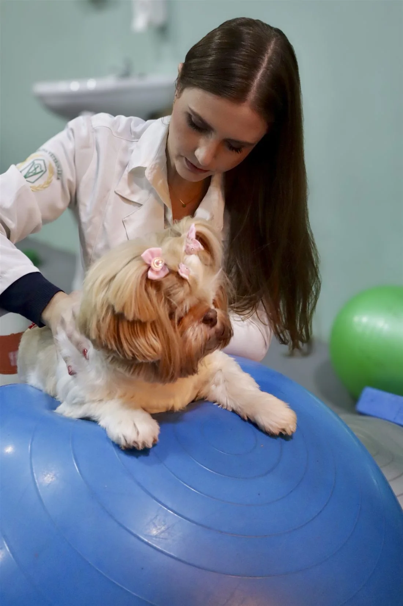
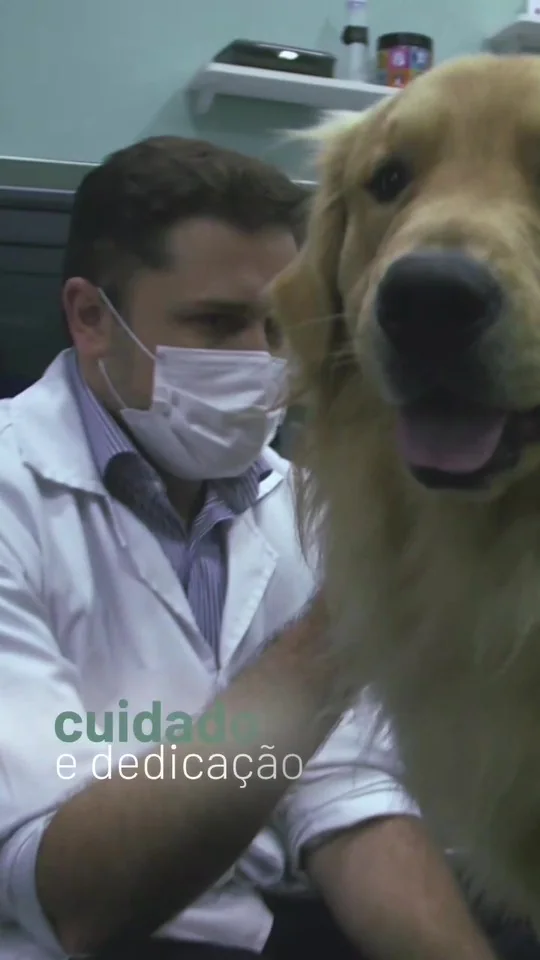
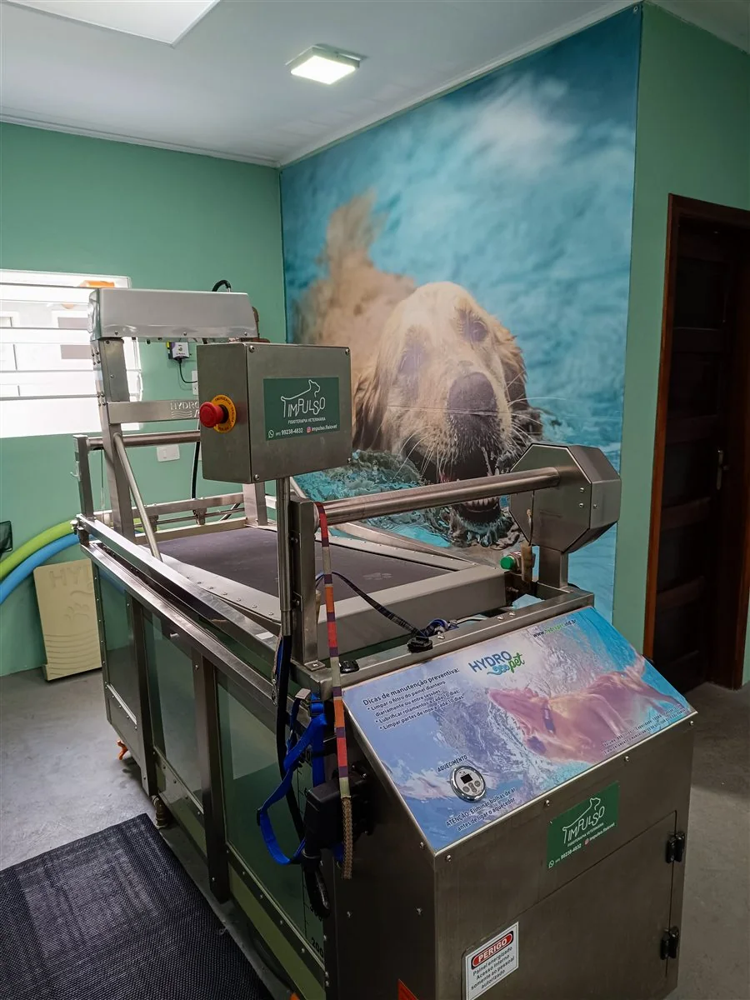
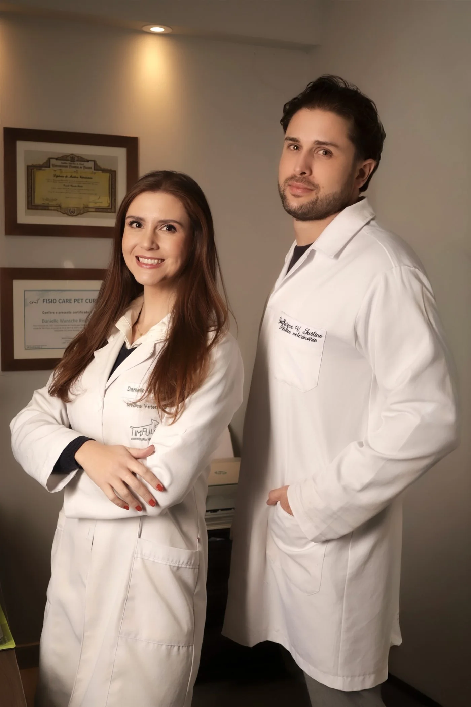
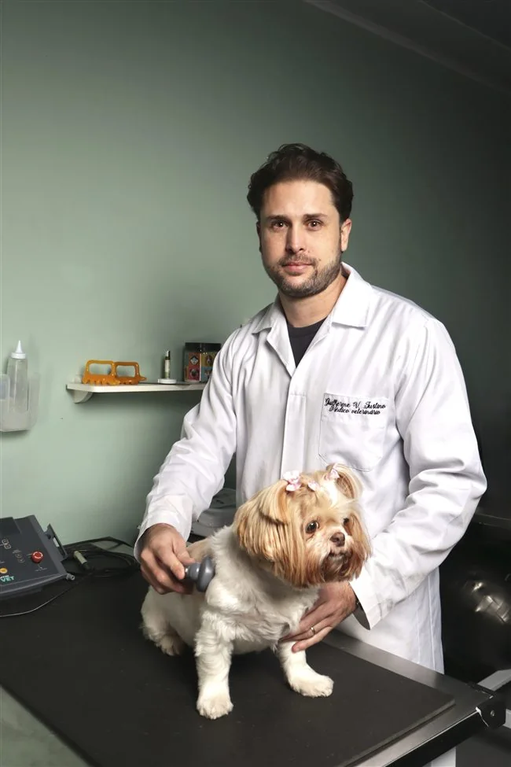
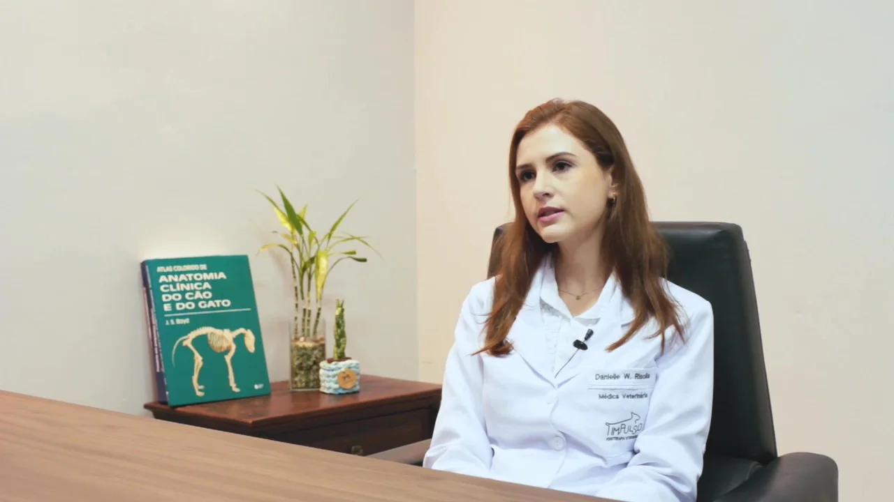
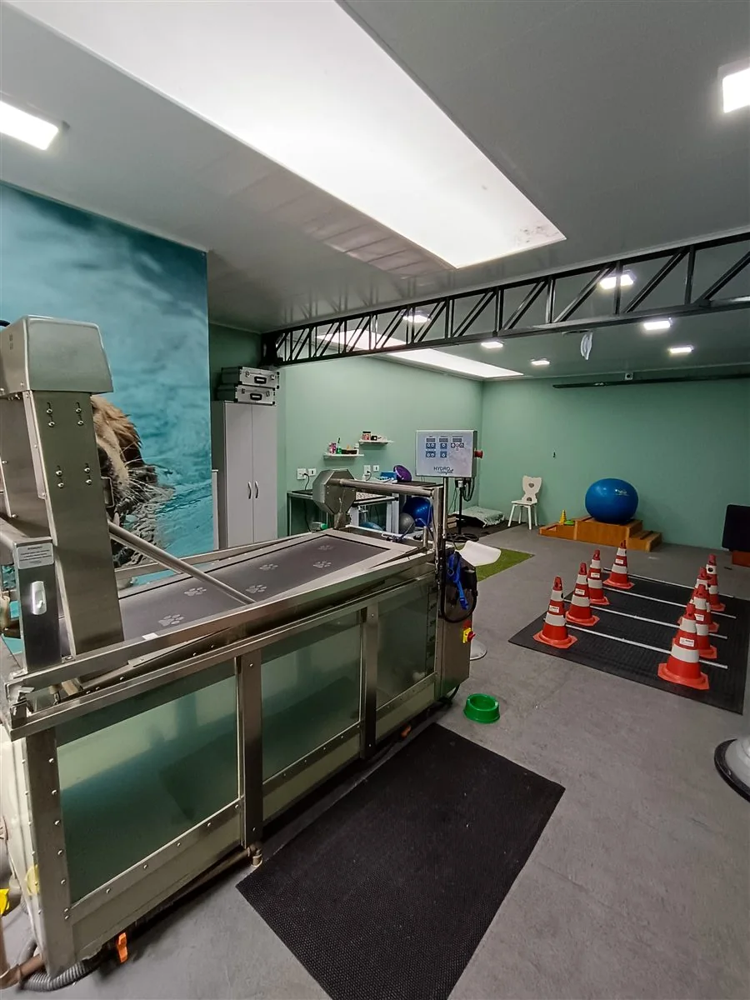

Depois de uma cirurgia
Acompanhamento na recuperação de fraturas, cirurgias de ligamentos e alterações do quadril.
Recuperação pós-operatóriaFISIOTERAPIA VETERINÁRIA EM CURITIBA
Cuidado, acolhimento e reabilitação para cães e gatos. Um plano individualizado, com acompanhamento veterinário em cada sessão e atenção a cada conquista.
Agendar avaliação Conheça o primeiro atendimento
CONHEÇA A IMPULSO
Um breve olhar sobre nossa equipe, nosso espaço e o cuidado com cada paciente.
VÍDEO INSTITUCIONAL · 33 SEGUNDOS
Não foi possível reproduzir neste navegador. Abrir vídeo ou baixar arquivo.
Cenas da clínica, da equipe e de pacientes em atendimento. A reprodução começa somente ao clicar.
UM OLHAR PARA CADA FASE DA VIDA
A fisioterapia pode fazer parte do cuidado em diferentes momentos. Tudo começa por entender o seu pet, sua rotina e suas necessidades.
Acompanhamento na recuperação de fraturas, cirurgias de ligamentos e alterações do quadril.
Recuperação pós-operatóriaCuidado para pacientes com osteoartrose, displasia coxofemoral e mudanças na mobilidade.
Conforto e movimentoReabilitação de pacientes com alterações neurológicas, incluindo hérnias de disco com tratamento conservador.
Reabilitação individualizadaTem dúvidas sobre quando começar? Converse com a nossa equipe para entender o primeiro passo.
O PRIMEIRO PASSO É CONHECER
Mais do que a queixa principal, queremos conhecer o paciente por inteiro. A avaliação orienta um plano que faça sentido para ele e para a sua rotina.
Conversar sobre uma avaliaçãoAtendimentos com horário marcado.
Um tempo dedicado ao seu pet.
Entre em contato pelo WhatsApp. Vamos conversar sobre o seu pet e combinar o melhor horário para a avaliação.
Realizamos avaliação clínica, fisiátrica, neurológica e ortopédica para conhecer as necessidades do paciente.
Definimos o protocolo, a frequência e uma estimativa de sessões. Nesse encontro, já realizamos a primeira sessão, conforme a avaliação profissional.
RECURSOS QUE SE COMPLEMENTAM
O seu pet não precisa se adaptar a um protocolo pronto. Combinamos recursos de acordo com a avaliação e acompanhamos sua evolução ao longo do tratamento.

Exercícios na água, com o recurso da hidroesteira, integrados ao plano de reabilitação conforme a indicação de cada paciente.
Exercícios terapêuticos orientados para trabalhar o movimento e a função.
Aplicação de luz terapêutica como parte do protocolo individualizado.
Correntes elétricas terapêuticas, com parâmetros definidos pelo médico-veterinário.
Utilização de campos magnéticos como recurso complementar ao tratamento.
Recursos que utilizam ondas mecânicas, selecionados conforme a avaliação profissional.
Técnicas manuais integradas ao cuidado e ao conforto do paciente.
A indicação de cada recurso depende da avaliação. O plano pode ser ajustado conforme a evolução do seu pet.

CURITIBA, PR · DESDE 2021PESSOAS QUE CUIDAM DE VIDAS
A Impulso nasceu em 2021, do encontro de Guilherme Vicente Justino e Danielle Wunsche Risolia e do propósito de promover bem-estar e qualidade de vida para cães e gatos.
Formados em Medicina Veterinária pela UFPR e com pós-graduação em Fisioterapia Veterinária, os dois acompanham de perto cada paciente — da avaliação a cada etapa da reabilitação.
Acompanhamento integral do médico-veterinário responsável em todas as sessões.

UFPR · Pós-graduação em Fisioterapia Veterinária
CRMV/PR 14601UFPR · Pós-graduação em Fisioterapia Veterinária
CRMV/PR 16833NOSSA HISTÓRIA, NOSSAS VOZES
Nossa forma de cuidar, contada por quem atende e por quem vive essa experiência.
INSTITUCIONAL COMPLETO · 4MIN55S
O player do YouTube carrega somente ao clicar.
Abrir no YouTube ↗ESPAÇO PARA CADA CONQUISTA
Nosso centro de reabilitação na Vila Izabel reúne uma estrutura ampla, área para exercícios terapêuticos, hidroesteira e diferentes equipamentos em um só lugar.
Um ambiente para cuidar com atenção, respeitando o ritmo e as necessidades de cada paciente.
Veja como chegar
CONFIANÇA CONSTRUÍDA NO CUIDADO
“São profissionais extremamente dedicados, atenciosos e humanos.”
“Tem um cuidado e uma atenção sem igual.”
Trechos consultados no Google em 06/11/2026. Cada paciente tem sua própria história e evolução.
VAMOS TIRAR SUAS DÚVIDAS?
É natural ter perguntas antes de começar. Aqui estão algumas das mais frequentes no nosso dia a dia.
Fale com a nossa equipeSe o seu pet tem mudanças na mobilidade, uma condição ortopédica ou neurológica, ou está em recuperação de cirurgia, converse com o médico-veterinário. A avaliação ajuda a entender se a fisioterapia é indicada e qual o momento de começar.
Não é obrigatório. Recebemos pacientes por contato direto e por encaminhamento de outros médicos-veterinários. Se tiver carta de encaminhamento ou exames anteriores, traga para a avaliação.
Realizamos uma avaliação completa para definir o plano terapêutico, a frequência e uma estimativa de sessões. Nesse mesmo encontro, já acontece a primeira sessão de fisioterapia, conforme a avaliação profissional.
Sim. Atendemos cães e gatos, sempre com um plano individualizado para as necessidades de cada paciente.
A frequência e a estimativa inicial são definidas após a avaliação. O plano é acompanhado e pode ser ajustado conforme a resposta do paciente, suas necessidades e a rotina do tutor.
Não. A hidroterapia é um dos recursos disponíveis na Impulso. Sua indicação depende da avaliação e dos objetivos do plano de reabilitação de cada pet.
Você pode falar conosco pelo WhatsApp (41) 99238-4832 ou ligar para o mesmo número. Todos os atendimentos são realizados com horário marcado.
O PRÓXIMO PASSO PODE COMEÇAR AQUI
VENHA CONHECER
Rua Vereador Dino Gasparin, S/NHORÁRIOS DE ATENDIMENTO
Segunda a sexta · 8h às 18h
Sábado · 8h às 12h
Não temos estacionamento próprio. Há vagas na rua sem cobrança, sujeitas à disponibilidade.
Próximo ao Portão e Água Verde,
com carinho para pets de toda Curitiba.